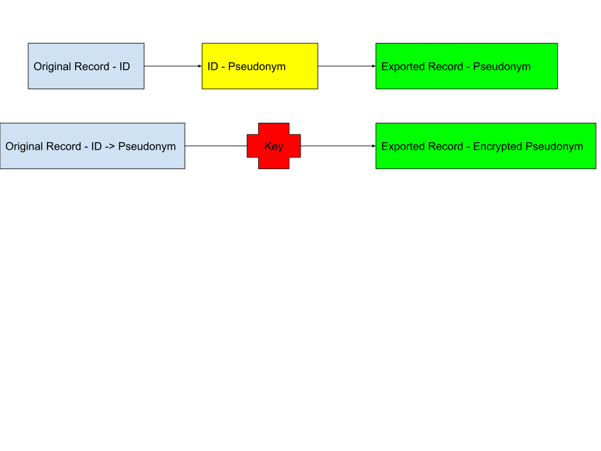

Pseudonymization
Document originally written as part of the LiSyM Cancer project.
1 Introduction
Pseudonymization of data is both vital for confidentiality reasons, and as a requirement of the GDPR.
It allows linking back the data to the initial record, but only through a separated, protected information.
But, as well as for anonymization, it also consists of voluntarily removing some other data that could co-relate to the patient: social data such as date of birth, address, that will not give access to the original record but could allow to find the person it concerns. Such data should be removed, degraded or masked.
2 What should be pseudonymized?
Every field that acts as an identifier and needs to be kept should be pseudonymised. It could be the main identifier of a record, or the identifiers of a sub-record.
For instance, if a record is concerning patients and relates to another category by using personal information (such as names or date of birth). The main ID of the patient record will be mapped to a pseudonym (generally a randomly chosen ID), all fields not needed should be removed, even if they act also as ID (sur as full name). The related record is linked by a pseudonym and, if the original ID is of importance, the relevant information will be extracted:
If the ID to the related record was firstname-lastname_date of birth, and the age is of importance:
- The mapping will be done using a pseudonym instead,
- The age will be extracted from the ID and kept as a field of the record. The amount of information should be reduced as much as possible: for instance “between 40 and 45” instead of “43 years and 3 months”.
The relation could also be removed on the exported data, with the related data pseudonymized to be related only to the original record.
Warning: exposed public data should be anonymised instead (no possibility of linking back to the original record, no possibility to co-relate to the concerned person).
3 Removing the possibilities to co-relate
In the previous example, the date of birth is personal information that does not link directly to the patient. But it could together with other information.
As such, all personal information, and be extension all data that could expose a person should be masked:
- Preferably be removed,
- Be degraded (remove the day and month of birth),
- Or eventually be masked by other means (see Wikipedia for a complete description).
4 How to
A pseudonymization allows a link between the original record (containing private information) and the pseudonymized record (that is open to more or different) persons only through another separated information - protected evidently.
So the data should ideally not be pseudonymized on the destination server, but prior to the export here. It could still be pseudonymized there if the mapping information - from the original data ID to the pseudonym - is not kept.
The external information to support the mapping can be the tuple original record’s identifier and pseudonym securely kept, or a key to decrypt the pseudonym which is mapped to the original record’s identifier on the same platform as the original record. If different persons need different access, it is possible to use several keys.

For security reasons, it would be better to give a new ID for the exported records, independent of the pseudonym, and use the pseudonym only for linking with the original record: in that case, if the mapping data has been compromised, it is easy to rebuild the mapping without breaking the exported data and their use. It might also help re-exporting the data with a new mapping if this last is lost.
Data masking can be done either by the migrating script, by the exporting system or on the system to export to. It will probably be done by the migrating script in most cases, but could be complemented. In NextCloud we could develop an app (plugin for NextCloud) for doing so.
5 Existing technical solutions
For the pseudonymization of record in itself, there aren’t many existing solutions, especially from OpenSource projects, but Mainzelliste can be set-up locally as well as used online. Fortunately there is a very mature web-based tool available called gPAS (and on GitHub), already used in several institutions in Germany. Other OpenSource projects include Kodex, also very complete but offering a web-interface only for the commercial version, a Rest-based API solution called Amnesia, which would need to be run locally only or behind some authentication, and an desktop tool: OpenPseudonymiser. There exists also commercial solutions, such as Viacryp.
Data masking is supported by PIMO that supports most method and work on JSon. It is also something we could implement. There is nothing difficult in doing it, but the difficulty resides on how much to remove/degrade so we comply with the need of data protection without rendering the data useless.
6 Things to be careful of
Security of the controller application: the controller application is the key to link the exported data with the original record. As such it needs to be accessible for authorised users, eventually with different accesses based on roles (though anyone without access to the initial records have no interest in the mapping, so roles are not very important as long as the initial records are private), and well secured. It also needs to be backed-up regularly.
Access right: there will be 3 different access rights between the original platform, the controller application and the destination platform. The controller application might be the most closed one.
In case of breach: as long as the original data has not been compromised as well, a quick recreation of the mapping should be enough.
7 Addendum
This document covers anonymisation and pseudonymisation in great detail together with examples.